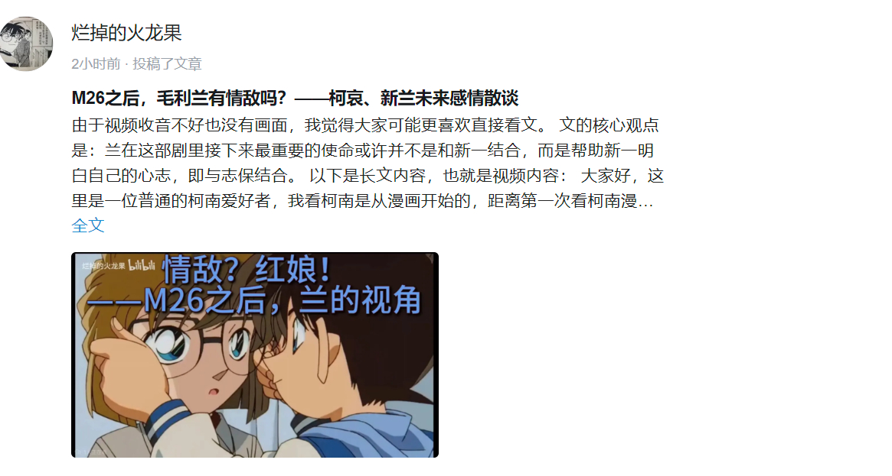

感谢吧务、系统不删之恩
大家好，这里是一位普通的柯南爱好者，我看柯南是从漫画开始的，距离第一次看柯南漫画已经有十五年了。M26上映之后呢，我在b站刷到了很多柯哀党的视频，也是更惊奇地重新打开了这部恋爱推理番。我也想和柯哀党们，以及柯南爱好者们分享我对未来新兰、柯哀感情线的看法。
M26之后，我认为最重要的点不在于柯哀二人之间的感情发展，而在于未来新兰二人之间的感情线发展。而新兰之间，我要讨论的重点不在于新一，而在于小兰。
在M26之后，小哀对柯南，也就是新一的喜欢，直接被放上了台面，也就是说与此同时，小兰多出来了一个在她与新一关系之间的情敌，也就是小哀。
那么我们知道，小兰在此前与新一的交往，以及修学篇之前的相处之中，是没有遇见过一位够格的情敌的。
他们之间的相处模式就是正常的青梅竹马、欢喜冤家这样的方向，尽管小兰不尊重新一的爱好，不理解新一的人生追求，但是我们都可以理解成小女生对她理解的心上人的小打小闹。
那么对新一来说，只要他喜欢毛利兰，不管是看上了她的哪个方面，是青梅竹马也好，是身材也罢，再或者就是新兰党认为的天选、一见钟情，只要他喜欢小兰，他们之间的感情就不会出太大的问题。
但是针对这里的前提，我们就可以发现他们俩处在一个比较静止、比较稳定的周围关系里。
比如说，除了小兰以外的所有声称自己喜欢新一的人，新一真的喜欢吗？
新一对这些追求者都没有很深的印象，比如说麻美学姐啦、世良真纯啦，但是当小兰知道了她们对新一的好感时，小兰是什么样的反应呢？
小兰直接脑补对方和新一接吻、拥抱的亲密场面了（这可能就是小兰被塑造出来的，对于爱情最重要的意义的理解），所以我们在漫画里看到小兰的焦虑、暴躁，她安排了至少两次莫须有的捉奸。
那么对于新一呢？其实他也是同理的，比如小兰与铁诸羽、小兰与新出医生、小兰与基德、小兰与某不知名帅哥，所以新一也会确保他与毛利兰之间没有情敌。
给我留下很深影响的一幕就是新一和本堂瑛佑之间的对白，新一为了从新兰党角度理解的护妻，不惜摘下自己柯南的马甲，我当时看过这一幕之后，虽然感觉新兰之间有点生硬，但是的的确确是磕到了新兰糖。
（其实这里两个人还没有确定关系。为什么要这么强调一句呢，因为结合小兰对爱情的理解，确定关系这一点很重要，但是对柯哀就不是如此）。
M26之后，我认为最重要的点不在于柯哀二人之间的感情发展，而在于未来新兰二人之间的感情线发展。而新兰之间，我要讨论的重点不在于新一，而在于小兰。
在M26之后，小哀对柯南，也就是新一的喜欢，直接被放上了台面，也就是说与此同时，小兰多出来了一个在她与新一关系之间的情敌，也就是小哀。
那么我们知道，小兰在此前与新一的交往，以及修学篇之前的相处之中，是没有遇见过一位够格的情敌的。
他们之间的相处模式就是正常的青梅竹马、欢喜冤家这样的方向，尽管小兰不尊重新一的爱好，不理解新一的人生追求，但是我们都可以理解成小女生对她理解的心上人的小打小闹。
那么对新一来说，只要他喜欢毛利兰，不管是看上了她的哪个方面，是青梅竹马也好，是身材也罢，再或者就是新兰党认为的天选、一见钟情，只要他喜欢小兰，他们之间的感情就不会出太大的问题。
但是针对这里的前提，我们就可以发现他们俩处在一个比较静止、比较稳定的周围关系里。
比如说，除了小兰以外的所有声称自己喜欢新一的人，新一真的喜欢吗？
新一对这些追求者都没有很深的印象，比如说麻美学姐啦、世良真纯啦，但是当小兰知道了她们对新一的好感时，小兰是什么样的反应呢？
小兰直接脑补对方和新一接吻、拥抱的亲密场面了（这可能就是小兰被塑造出来的，对于爱情最重要的意义的理解），所以我们在漫画里看到小兰的焦虑、暴躁，她安排了至少两次莫须有的捉奸。
那么对于新一呢？其实他也是同理的，比如小兰与铁诸羽、小兰与新出医生、小兰与基德、小兰与某不知名帅哥，所以新一也会确保他与毛利兰之间没有情敌。
给我留下很深影响的一幕就是新一和本堂瑛佑之间的对白，新一为了从新兰党角度理解的护妻，不惜摘下自己柯南的马甲，我当时看过这一幕之后，虽然感觉新兰之间有点生硬，但是的的确确是磕到了新兰糖。
（其实这里两个人还没有确定关系。为什么要这么强调一句呢，因为结合小兰对爱情的理解，确定关系这一点很重要，但是对柯哀就不是如此）。
2023-10-18 10:28 | Chaos🌐🌸:有小错，麻美学姐那里麻美基本是各方面条件都比她优秀，展示了一个她不知道的新一，就认为赢不了麻美学姐；而且她脑补是接吻起步，上床事后封顶，脑补起因去也是怀疑新一外面有女人，而且还是没有告白前，双方关系纯从小玩到大的2023-10-18 10:43 | cxycyxd:回复 Chaos🌐🌸 :哈哈哈哈哈感谢纠正，原来比我想的还要极端…2023-10-18 12:42 | 青柠澄澈:小兰和铁诸羽？应该是和冲田吧？2023-10-18 12:53 | cxycyxd:回复 青柠澄澈 :就是修学篇那位长得和新一很像的小哥，我是凭记忆写的，所以不太清楚具体2023-10-18 13:16 | 一个路人路过♬:我的理解正好相反，是兰至今为止，除了在【新一对她的喜欢】上，她不够格和其他出现的对手比较，量子不说，面对麻美扯出来的【柠檬派】就让她感到了退缩，面对世良这个能和新一在侦探领域并肩而行的存在，她也没有任何可以插手的余地，这种依靠着男方单方面连接的关系非常不稳固。2023-10-18 13:17 | cxycyxd:回复 一个路人路过♬ :之所以说其他对手不够称为情敌，是因为新一不care，不是说兰比她们好在什么地方啦2023-10-18 13:18 | 一个路人路过♬:说白了，【新一的喜欢】应该是与其他情敌之间杀得难舍难分难分胜负最后定输赢的胜负手，而不是唯一能依靠的条件。2023-10-18 13:20 | 一个路人路过♬:回复 cxycyxd :所以在我看来不够行，战胜情敌的唯一成功不在于比其他人强比其他人更契合新一，而只依靠新一对她【保持喜欢】，换句话说，当新一的喜欢淡了，便没有任何机会，你觉得这种关系健康吗2023-10-18 13:20 | cxycyxd:回复 一个路人路过♬ :赞同！不过谁又能是哀的对手呢hhh2023-10-18 13:21 | cxycyxd:回复 一个路人路过♬ :是的，说得对2023-10-19 00:52 | 贴吧用户_G1t9tMU:回复 cxycyxd :虽然但是应该是小兰与冲田总司吧，铁诸羽是女孩子而且她们俩都没见过面呢2023-10-19 01:04 | cxycyxd:回复 贴吧用户_G1t9tMU :是的是，这里是我张冠李戴了，感谢指正


那么根据以上的散谈，我们是不是可以确定新兰之间潜在的两条事实呢？
第一条是，新兰之间走的是一个顺风顺水二人转的路线，无论是新一还是小兰，都没有意识到对方那里存在一个真正值得较量的第三者，也就是说他们之间的吃醋还是属于那种恋爱喜剧范畴。
第二条是，新兰之间无法接受对方有第三者的存在，而新一与小兰里，更无法接受自己有情敌的是小兰。
其实这很好理解，因为小兰在新一身上思虑过重，我看了这么多集柯南，真的是感到小兰这个角色的表达核心和新一无法分开，因为从第一集新一消失的一刹那，小兰角色的核心诉求就是等新一回来。
所以如果她有了情敌，甚至对方发展成了潜在的，或者是小兰想象里的外遇，小兰会是怎样的感受呢？
我觉得如果我是小兰，我会感到很伤心。因为情敌嘛，肯定不能单相思而已，是确实要和新一有密切的、“不正当”来往的，而小兰在新一消失前一直用她的控制欲（这个词可能有点柯哀党了哈）驱散着靠近新一的追求者，再加上那时的新一本来也对小兰很忠诚，所以情敌的出现一定是在新一消失以后。
我的心上人不能和我见面，反而去和新的女人搭上了关系，这到底是为什么？
是他不喜欢我了吗？是他花花公子的本性吗？
但是即使这样，连青梅竹马也要隐瞒、欺骗的吗？
而且会让毛利兰感到最不能理解的是，她男友不自知的精神出轨，发生在他们确定关系的修学篇之后。
这就是M26之后，新兰感情面临的问题。
第一条是，新兰之间走的是一个顺风顺水二人转的路线，无论是新一还是小兰，都没有意识到对方那里存在一个真正值得较量的第三者，也就是说他们之间的吃醋还是属于那种恋爱喜剧范畴。
第二条是，新兰之间无法接受对方有第三者的存在，而新一与小兰里，更无法接受自己有情敌的是小兰。
其实这很好理解，因为小兰在新一身上思虑过重，我看了这么多集柯南，真的是感到小兰这个角色的表达核心和新一无法分开，因为从第一集新一消失的一刹那，小兰角色的核心诉求就是等新一回来。
所以如果她有了情敌，甚至对方发展成了潜在的，或者是小兰想象里的外遇，小兰会是怎样的感受呢？
我觉得如果我是小兰，我会感到很伤心。因为情敌嘛，肯定不能单相思而已，是确实要和新一有密切的、“不正当”来往的，而小兰在新一消失前一直用她的控制欲（这个词可能有点柯哀党了哈）驱散着靠近新一的追求者，再加上那时的新一本来也对小兰很忠诚，所以情敌的出现一定是在新一消失以后。
我的心上人不能和我见面，反而去和新的女人搭上了关系，这到底是为什么？
是他不喜欢我了吗？是他花花公子的本性吗？
但是即使这样，连青梅竹马也要隐瞒、欺骗的吗？
而且会让毛利兰感到最不能理解的是，她男友不自知的精神出轨，发生在他们确定关系的修学篇之后。
这就是M26之后，新兰感情面临的问题。
2023-10-18 10:45 | Chaos🌐🌸:不是会伤心，是会暴怒，明确说自己喜欢工藤新一的比她优秀的麻美她会哭，但八字还没一撇的时候听到别人说自己是新一女友的例子是赤木量子，小兰当即怒气满满抓奸去了，现在人有了“女友”身份，她发现新一有可能“移情别恋”的话哪能坐得住啊，我是不对她不用武力威抱有希望的胁2023-10-18 10:47 | cxycyxd:到位！但她暴怒后回过神来必伤心，也是可以预计的事2023-10-18 14:42 | 随意♬飘荡:很难说小柯什么时候才开始喜欢小哀，但是可以确定的是新兰确定关系前就有好感了2023-10-18 22:32 | cxycyxd:回复 随意♬飘荡 :是，他俩，尤其是哀对柯，一眼万年2023-10-18 22:33 | 王盟萌萌😘:回复 cxycyxd :其实柯南对灰原感情也挺早，不过被毛利角抢先一步逼得告白了2023-10-18 22:46 | 随意♬飘荡:回复 cxycyxd :新兰告白本身就很无厘头的，首先小兰伦敦街头大闹逼迫告白，新一则所有事情都隐瞒和迁就小兰，还有没搞清楚内心就稀里糊涂同意交往了，只能说新兰两人都不成熟吧。2023-10-19 01:07 | cxycyxd:回复 随意♬飘荡 :对，新一和兰都对感情很不成熟，不过十六七岁的孩子嘛，感情上囫囵吞枣也都可以理解。以后新一应该会更成熟地对待感情哒2023-10-20 00:36 | 贴吧用户_aGDtC16:回复 cxycyxd :在真人版中他们三个人出现 小兰完全被变大的灰原哀气场压制 问都不敢问2024-03-03 00:03 | 贴吧用户_Q7e6y1Q:在三次元看来是这样的，但是在二次元，只要雷不爆，一切都可以当没发生，当做作者的笔力问题。
现在让我们开始做一个假设：小兰知道柯南等于新一，立刻就知道她多了一个情敌（毛利兰铁柯哀党），那么只要柯南不傻，不想让自己被嫌弃成变态，小兰就必须同时知道小哀也变小的事实。
那么，我们在这里强调的不是小兰能不能在这段三角关系中胜出，而是，她能够接受自己一直在被最亲近的身边人欺骗的事实吗？她能够接受这个自己已经被动参与了很久，信息完全不对等的三角关系吗？
我觉得这不仅是不能的，而且对小兰很残忍，因为柯南在把小兰关进安全屋的同时，也把自己在变小之后的感情历程（比如和步美、和灰原）完全隐瞒了起来，而这恰恰是小兰的雷区。
在兰对于感情的理解里，一就是一，二就是二，她不可能接受自己男友给别人护身符眼镜的事实。
说实话，不仅是她，我觉得世界上任何一个女孩子都不可能接受，重点不在于给护身符这个行为，而在于无数件与感情有关的事情的隐瞒，乃至欺骗。
要知道，感情里很重要的一点就是相互知悉。
那有人可能感到很奇怪，哪里有欺骗呢？
我认为在柯南的角度看，黑衣组织和小哀的存在叫隐瞒，但是在小兰的角度看，黑衣组织的存在叫隐瞒，但是小哀的存在就叫欺骗。
君子问迹不问心，你没有把另一个和你这么亲密的女孩告诉我，而且对方那么明显地喜欢你，那你就是喜欢她，你不告诉我就是意味着你心里有鬼。
别忘了分析的主人公是毛利兰，以她对于感情的正常高中生理解，我认为我这样解读并不过分。
所以我们就大胆猜测，为什么青山不轻易刻画柯南对于灰原哀的亲密感情，为什么现在我柯对于自己情感的推理非常差劲。
这是因为当柯南对灰原也有感情的时候，柯哀只要被毛利兰知道真实身份，新兰的感情就会出现严重的裂痕。
甚至毛利兰这个活了一千多集漫画的角色也会进一步失真：她所做的、所想的，原来都与他无关，那么在这之后，兰会有怎样的成长空间呢？
小兰有圣母式的善良，她真的有能力面对与小哀之间的情感纠葛吗？
而且我们从整体上说，柯南是一部子供向少年漫，大家不觉得这里往后的剧情走向就越来越严肃向、悲剧向了吗？
那么，我们在这里强调的不是小兰能不能在这段三角关系中胜出，而是，她能够接受自己一直在被最亲近的身边人欺骗的事实吗？她能够接受这个自己已经被动参与了很久，信息完全不对等的三角关系吗？
我觉得这不仅是不能的，而且对小兰很残忍，因为柯南在把小兰关进安全屋的同时，也把自己在变小之后的感情历程（比如和步美、和灰原）完全隐瞒了起来，而这恰恰是小兰的雷区。
在兰对于感情的理解里，一就是一，二就是二，她不可能接受自己男友给别人护身符眼镜的事实。
说实话，不仅是她，我觉得世界上任何一个女孩子都不可能接受，重点不在于给护身符这个行为，而在于无数件与感情有关的事情的隐瞒，乃至欺骗。
要知道，感情里很重要的一点就是相互知悉。
那有人可能感到很奇怪，哪里有欺骗呢？
我认为在柯南的角度看，黑衣组织和小哀的存在叫隐瞒，但是在小兰的角度看，黑衣组织的存在叫隐瞒，但是小哀的存在就叫欺骗。
君子问迹不问心，你没有把另一个和你这么亲密的女孩告诉我，而且对方那么明显地喜欢你，那你就是喜欢她，你不告诉我就是意味着你心里有鬼。
别忘了分析的主人公是毛利兰，以她对于感情的正常高中生理解，我认为我这样解读并不过分。
所以我们就大胆猜测，为什么青山不轻易刻画柯南对于灰原哀的亲密感情，为什么现在我柯对于自己情感的推理非常差劲。
这是因为当柯南对灰原也有感情的时候，柯哀只要被毛利兰知道真实身份，新兰的感情就会出现严重的裂痕。
甚至毛利兰这个活了一千多集漫画的角色也会进一步失真：她所做的、所想的，原来都与他无关，那么在这之后，兰会有怎样的成长空间呢？
小兰有圣母式的善良，她真的有能力面对与小哀之间的情感纠葛吗？
而且我们从整体上说，柯南是一部子供向少年漫，大家不觉得这里往后的剧情走向就越来越严肃向、悲剧向了吗？
2023-10-18 10:49 | Chaos🌐🌸:问题不在于发不发护身符，柯南曾经当着小兰面说过自己手机里会有喜欢的女孩子发的短信，而那手机里小兰看到的只有博士和哀的短信，所以小兰是存在柯南喜欢哀这一认知的，你让她承认新一=柯南，就得让她承认新一直伦敦篇那个被她逼出来的告白前就和她说了自己喜欢哀，自己只是被新一逗着玩的小丑2023-10-18 10:51 | cxycyxd:对对对，还有那个手机，哈哈哈哈哈哈谢谢你让我知道我没写进来这么重要的铁证2023-10-18 22:36 | 王盟萌萌😘:回复 cxycyxd :不少证据证明后面毛利角不是不怀疑，而是不敢怀疑了。她的脑子想不到柯哀变小是有性命之忧，只能想到新一有了新的喜欢的人2023-10-19 04:24 | 杀神唐百斩:更关键的难道不是哀变小的事实被不该知道的人知道了吗？2023-10-19 04:52 | cxycyxd:回复 杀神唐百斩 :没有考虑主线信息，或许是吧2023-10-19 10:04 | 藤椒鱼丸:排除了一个人生的错误选项，算不上悲剧向吧，他们都年轻呢
如果我们放弃这个假设而换成另外一种，柯南没有把身份告诉小兰，而是直接以新一的面貌重新出现，柯南消失在时光旧账中……
那么这又会带来两个问题：
第一， 这部漫画、这部剧叫《名侦探柯南》，我认为柯南的消失就意味着漫画的结束，也就是说这就是大结局。
第二， 这依然意味着新一对小兰的欺骗。无论灰原结局怎样，小兰对于灰原与新一之间的关系有多精彩将永远被关在安全屋里，同时很搞笑的是，还会以那种pua的姿态面对新一。
但是关键在于，新一将不得不说谎、不断地说谎、永远地说谎——这是这部漫画想要表达的主题吗？
工藤新一，在案件结束时自信满满地坚称“真相永远只有一个”，而在自己的人生感情上，对爱人说的是一种“真相”，心里知道的是另一种“真相”？
这太扯了吧。也就是说，如果柯南是一部galgame，在M26哀对柯的箭头实锤之后，接下来新一如果走兰线，无论怎么走，被伤害或被蒙蔽的人都会是兰，以及名柯这个国民级IP。
即使是志保，在列车篇得知被骗过一次之后都有些委屈兼傲娇地说：总而言之！竟然把我蒙在鼓里，我绝对不会轻易原谅你！我这次根本是被骗了，完全都不觉得有任何开心的成分！
志保的命被柯南救了，而且只是骗了一次之后立刻被告知真相，尚且会对柯南不爽，那毛利兰被“蒙在鼓里”整整二十年，她难道会在知道真相之后，继续毫无成长地与志保竞争新一吗？
那么这又会带来两个问题：
第一， 这部漫画、这部剧叫《名侦探柯南》，我认为柯南的消失就意味着漫画的结束，也就是说这就是大结局。
第二， 这依然意味着新一对小兰的欺骗。无论灰原结局怎样，小兰对于灰原与新一之间的关系有多精彩将永远被关在安全屋里，同时很搞笑的是，还会以那种pua的姿态面对新一。
但是关键在于，新一将不得不说谎、不断地说谎、永远地说谎——这是这部漫画想要表达的主题吗？
工藤新一，在案件结束时自信满满地坚称“真相永远只有一个”，而在自己的人生感情上，对爱人说的是一种“真相”，心里知道的是另一种“真相”？
这太扯了吧。也就是说，如果柯南是一部galgame，在M26哀对柯的箭头实锤之后，接下来新一如果走兰线，无论怎么走，被伤害或被蒙蔽的人都会是兰，以及名柯这个国民级IP。
即使是志保，在列车篇得知被骗过一次之后都有些委屈兼傲娇地说：总而言之！竟然把我蒙在鼓里，我绝对不会轻易原谅你！我这次根本是被骗了，完全都不觉得有任何开心的成分！
志保的命被柯南救了，而且只是骗了一次之后立刻被告知真相，尚且会对柯南不爽，那毛利兰被“蒙在鼓里”整整二十年，她难道会在知道真相之后，继续毫无成长地与志保竞争新一吗？
2023-10-18 11:42 | 晓凛Neko:二十年？2023-10-18 12:54 | cxycyxd:回复 晓凛Neko :名柯连载了二十年了嘛2023-10-18 13:08 | 影毓裴小童鞋:实际上故事主线也才大半年，期间新一变回去两次，还是不是打电话，这还都是交往之前发生的，完全不觉得毛利兰有啥好委屈的，还天天说自己等的多辛苦2023-10-18 13:18 | cxycyxd:回复 影毓裴小童鞋 :2023-10-18 22:40 | 王盟萌萌😘:现在很有可能最后的结局是工藤新一消失。而且毛利兰最后一定会发现柯南身份的2023-10-19 01:09 | cxycyxd:回复 王盟萌萌😘 :赞同，这部剧叫柯南嘛
不会被封吧，上一贴莫名其妙被封了，来个友友回复稳定下我心
2023-10-18 09:58 | CoAi_4869:楼主写完了？2023-10-18 09:59 | cxycyxd:回复 CoAi_4869 :对啊2023-10-18 10:01 | CoAi_4869:回复 cxycyxd :楼主对新兰柯哀未来走向有什么预测吗？2023-10-18 10:02 | cxycyxd:情势一片大好2023-10-18 10:03 | CoAi_4869:回复 cxycyxd :未来柯南、哀、小兰会做什么样的选择呢？2023-10-18 10:05 | cxycyxd:也不能说绝对，毕竟我又不是作者，但可以肯定都是好结局，兰可能稍稍要做点感情上的让步

所以我认为，兰在这部剧里接下来最重要的使命或许并不是和新一结合，而是——此处有雷，新兰党、纯爱战士勿入——
帮助新一明白自己的心志，即与志保结合。
帮助新一明白自己的心志，即与志保结合。
2023-10-18 10:05 | CoAi_4869:小兰是柯哀最大助攻者2023-10-18 14:09 | 7_hk:？
有可能哦，还可以挽回下人设，这样名柯走向也就还算圆满，不会显得那么严肃和狗血2023-10-18 22:33 | cxycyxd:回复 7_hk :我这贴就是这个意思，朋友懂我

需要解释的第一点是，白鸟之于高佐、红叶之于平和、步美之于柯哀、红子之于快青，名柯世界里主角都存在过，或正存在着三角关系，并且都不存在明确孰胜孰败的胜负关系。
我没有看过基德漫画，没有发言权，但剩下三对里面，白鸟和红叶的喜欢都是小时候的误会在长大后变成了执念，步美则是因为柯南的特别而一直喜欢着他，但作者在不否认这种情愫的同时，明显更执著于另外一对的完整情感历程。
也就是说，新兰完全可以在分开之后继续保持很好的伙伴、乃至青梅竹马关系，兰也完全可以放下自己对新一的执念，拥抱以自己为主轴的未来人生。
这里说一句与话题无关的话，在兰的感情观里，她把性与忠贞捆绑在了一起，而且对这两者都看得很重，我不否认这种感情观的合理性，但我认为它不应该，也完全没必要以新一命名。
兰想要的幸福是新一无法主动给予的，所以兰一直表现出一种怨妇式的呼唤，以及在新一对爱好投入时，发出的一种弃妇式的埋怨。我认为兰想要和风细雨的生活没有什么错，只是她和新一的结合使彼此都失去了天性向往的自由。
我没有看过基德漫画，没有发言权，但剩下三对里面，白鸟和红叶的喜欢都是小时候的误会在长大后变成了执念，步美则是因为柯南的特别而一直喜欢着他，但作者在不否认这种情愫的同时，明显更执著于另外一对的完整情感历程。
也就是说，新兰完全可以在分开之后继续保持很好的伙伴、乃至青梅竹马关系，兰也完全可以放下自己对新一的执念，拥抱以自己为主轴的未来人生。
这里说一句与话题无关的话，在兰的感情观里，她把性与忠贞捆绑在了一起，而且对这两者都看得很重，我不否认这种感情观的合理性，但我认为它不应该，也完全没必要以新一命名。
兰想要的幸福是新一无法主动给予的，所以兰一直表现出一种怨妇式的呼唤，以及在新一对爱好投入时，发出的一种弃妇式的埋怨。我认为兰想要和风细雨的生活没有什么错，只是她和新一的结合使彼此都失去了天性向往的自由。
2023-10-18 14:48 | 随意♬飘荡:现在柯兰姐弟情已经占比越来越大了，如果是新兰结局，我真的不知道小兰应该如何面对柯兰和新兰的矛盾啊。2023-10-18 21:26 | 唯一的届不到💖:忠贞?2023-10-18 22:28 | cxycyxd:回复 唯一的届不到💖 :她要求对方是头脑和行为都要忠贞，她自己的话…客观说都没有做到。但兰的感情世界里忠贞不渝是个基础价值，你看她多死绑新一啊2023-10-18 22:45 | 王盟萌萌😘:她不忠贞啊，退一步作者对她的定位很多时候是卖肉，再退一步，作者明锤过她寂寞了2023-10-19 01:08 | cxycyxd:回复 王盟萌萌😘 :这里我写得不够严谨，应该是兰要求别人对她忠贞，她下意识地认为自己也在为对方忠贞，但无论思想还是行动都没做到。感谢您的指正啦2023-10-19 02:05 | 王盟萌萌😘:回复 cxycyxd :是的。她自己起码主观觉得自己对工藤新一坚贞不屈的，至于有没有小心思就不晓得了。她对工藤新一也是这么要求的
需要解释的第二点则是，小兰如何在使新一意识到自己爱着的人是志保这件事中发挥主要作用。
我个人认为可能性有两种：第一种是小兰自知地放下新一，其原因在于兰是柯哀粉头。
兰认为柯南喜欢的“一定是小哀呢”，转换同义词之后就是“新一喜欢的一定是志保”。请问，在这种牢固的人际关系断言下，兰会选择棒打鸳鸯还是成全爱人呢？
新一也是小兰的心头好啊，小哀还把小兰当作姐姐，我个人认为小兰会像当初小哀在新兰前选择隐忍一样，在新志（前柯哀）前同样选择隐忍，这样也是在终章对毛利兰人物的升华：她终于等来了自己的成长、得到了她自己对于感情的自立。
此外还有一点，就是我之前提到兰很有圣母式的善良，我很希望能再见到她像满月篇那样的、而不是拉窗帘事件里的善良。
但是还有一种不太理想的剧情走向，就是小兰像很多人猜测的那样，向黑衣组织暴露了新一在和自己交往的消息，从而使新一对小兰、小哀的情感认知发生转折。
老实说，考虑到青山在最近的红莲骷髅篇里对小兰那么大的恶意，这种剧情发生的概率预测下也不能不高。
但我还是不希望这样，因为有柯哀党开心就同样有新兰党难过，我这个柯哀党就是从新兰党那里转来的，所以我真心希望每一个角色都至少不要崩坏塌房。
我个人认为可能性有两种：第一种是小兰自知地放下新一，其原因在于兰是柯哀粉头。
兰认为柯南喜欢的“一定是小哀呢”，转换同义词之后就是“新一喜欢的一定是志保”。请问，在这种牢固的人际关系断言下，兰会选择棒打鸳鸯还是成全爱人呢？
新一也是小兰的心头好啊，小哀还把小兰当作姐姐，我个人认为小兰会像当初小哀在新兰前选择隐忍一样，在新志（前柯哀）前同样选择隐忍，这样也是在终章对毛利兰人物的升华：她终于等来了自己的成长、得到了她自己对于感情的自立。
此外还有一点，就是我之前提到兰很有圣母式的善良，我很希望能再见到她像满月篇那样的、而不是拉窗帘事件里的善良。
但是还有一种不太理想的剧情走向，就是小兰像很多人猜测的那样，向黑衣组织暴露了新一在和自己交往的消息，从而使新一对小兰、小哀的情感认知发生转折。
老实说，考虑到青山在最近的红莲骷髅篇里对小兰那么大的恶意，这种剧情发生的概率预测下也不能不高。
但我还是不希望这样，因为有柯哀党开心就同样有新兰党难过，我这个柯哀党就是从新兰党那里转来的，所以我真心希望每一个角色都至少不要崩坏塌房。
2023-10-18 10:12 | CoAi_4869:回复 cxycyxd :暴露柯南的身份还真有可能2023-10-18 10:13 | CoAi_4869:哀也没有把兰当姐姐，只是在某些情况下联想到了自己的姐姐2023-10-18 10:15 | cxycyxd:回复 CoAi_4869 :这个还真是，不过在m26里面对兰说了姐姐，电影离得这么近，就把它写了进来2023-10-18 11:06 | Chaos🌐🌸:小兰自己都有一大堆柯哀磕点可以说的，例如我和你说话你看手机发短信我就想知道你给谁发；平时自信满满却扭扭捏捏承认自己喜欢对方；对方疑似在海里遇险直接跳海找人；对方感冒就去她家照顾近一个寒假；有不好的预感会晚上和自己说想去看她；2023-10-18 11:06 | Chaos🌐🌸:甚至平时还会说对方和自己经历了什么事情，更致命的是柯南说过自己想不出来哀喜欢听啥，不久前就是新一“侦探猜不到喜欢的人的心思”，小兰会不会联想到这个“告白”是新一在嘲讽自己是小丑呢？2023-10-18 11:13 | cxycyxd:回复 Chaos🌐🌸 :哈哈哈对啊！所以说人家是粉头嘛2023-10-18 11:14 | cxycyxd:回复 Chaos🌐🌸 :嗯嗯，这些都是经典老番2023-10-18 13:28 | 一个路人路过♬:兰哀整部剧里交流没过几十句话，兰对哀大概就是对小孩子的爱护，哀对兰最多也是点到为止的怜惜，为什么总觉得她们关系很好，甚至把兰放到明美这个相依为命的真姐姐的地位啊？2023-10-18 21:23 | 瑶花依夏草:哀没把兰当成姐姐，更多的是兰的做法让她触景生情，类似于年年岁岁花相似，岁岁年年人不同的心境。2023-10-18 22:30 | cxycyxd:回复 瑶花依夏草 :这样说很有道理，谢谢您指教，不过哀的确只对兰这么说过吧，说明兰在恋爱之外，她对待哀的确有和明美相似的地方。2023-10-19 01:31 | 贴吧用户_6S5ya6A9e:回复 cxycyxd :我觉得结局不管如何，小兰最好都有点起伏，投奔黑衣组织也好，劝导柯南，或者直接正面和灰原竞争也行，最怕的就是结局查无此人，这才是对这个角色最大的残忍2023-10-19 02:18 | cxycyxd:回复 贴吧用户_6S5ya6A9e :赞成

但其实我觉得新兰的关系最终走向分手，跟哀可能没有关系，实际上哀一直以来的行为都促进了新兰的感情发展。
单纯的看新兰两个人的话，新一是一直在满足毛利兰的情感需求，但是毛利兰一直是索取方，可以说毛利兰对于新兰关系最大的付出就是等待。而且新兰之间有一个很难解决的问题，就是毛利兰一直是对推理不感兴趣的，甚至可以说推理其实就是她的情敌，当新一在进行推理的时候，毛利兰其实是完全被隔离开的，而且最多只能提供有限的破案帮助，并不能真的参与进去。所以我的看法是可能会出现毛利兰让新一在她和推理之间选一个，从而导致新兰关系走向终点。
单纯的看新兰两个人的话，新一是一直在满足毛利兰的情感需求，但是毛利兰一直是索取方，可以说毛利兰对于新兰关系最大的付出就是等待。而且新兰之间有一个很难解决的问题，就是毛利兰一直是对推理不感兴趣的，甚至可以说推理其实就是她的情敌，当新一在进行推理的时候，毛利兰其实是完全被隔离开的，而且最多只能提供有限的破案帮助，并不能真的参与进去。所以我的看法是可能会出现毛利兰让新一在她和推理之间选一个，从而导致新兰关系走向终点。
2023-10-18 10:45 | cxycyxd:也有可能，不过兰应该没把推理上升到那么憎恨的程度，她只是借攻击推理来告诉新一她缺少关注了2023-10-18 10:47 | 贴吧用户_057V96N:回复 cxycyxd :也不是憎恨的地步，就是那种推理不推理都无所谓的态度，参考自红叶的挑战书。2023-10-18 10:50 | cxycyxd:回复 贴吧用户_057V96N :对的，这是他们相处最大的雷，不过如果小兰因为这个分手，那就彻底成了败犬，我想的是青山会对自己笔下曾经的女一号加点仁慈。2023-10-18 11:01 | 别XB乱叫☜:回复 cxycyxd :青山说过他想让哀第二卷就登场，可惜因为动画组的缘故推迟，所以个人感觉青山笔下曾经的女一号应该是哀，而动画组的女一号是兰2023-10-18 11:05 | 别XB乱叫☜:回复 cxycyxd :仁不仁慈目前来看挺难说，毕竟漫画最新话对兰的刻画比较负面2023-10-18 11:09 | Chaos🌐🌸:回复 贴吧用户_057V96N :这事还得说柯南，伦敦篇前和小兰说自己喜欢哀，伦敦篇后和小兰说自己想不出来哀喜欢听啥，然后去水族馆又出来个我和你说话你分心给别人发短信我就要知道你给谁发，小兰真的不会觉得新一把自己当小丑玩吗2023-10-18 11:12 | cxycyxd:回复 别XB乱叫☜ :我赞同2023-10-18 11:12 | cxycyxd:回复 别XB乱叫☜ :“比较”…那真是对喜欢兰的人来说没眼看了2023-10-18 21:28 | 唯一的届不到💖:回复 cxycyxd :仁慈?指的是爹被红莲骷髅吃了吗2023-10-18 21:30 | 瑶花依夏草:回复 cxycyxd :在兰的视角里，小五郎从警校辞职转行当侦探后父母分居，所以她对侦探这份职业比较排斥，也担心新一会变成第二个小五郎。2023-10-18 22:24 | cxycyxd:回复 瑶花依夏草 :是的，兰不喜欢推理和父亲有关。2023-10-18 22:25 | cxycyxd:回复 唯一的届不到💖 :2023-10-18 22:26 | 唯一的届不到💖:确实够雷…也说明兰现在的人物塑造出大问题了
回复 cxycyxd :不是现在有问题，是一直就有。越挖越多的那种2023-10-18 22:36 | 贴吧用户_057V96N:回复 cxycyxd :2023-10-19 01:12 | cxycyxd:回复 贴吧用户_057V96N :这么一想确实相当有道理，兰的塑造也是漫画的一大亮点，兰这个圆形人物塑造得很棒。感谢指教！
dd
新兰分手肯定是内部出问题，73要的效果就是；既使名柯宇宙不存在哀和黑衣组织，新兰都不可能走到一起。
2023-10-18 12:54 | cxycyxd:赞同2023-10-18 12:55 | cxycyxd:不过没有哀的话，新一更不一定会知道他真实的内心（即使现在他也不知道），新兰就这样打打闹闹自我内耗也能说得过去2023-10-18 21:31 | 瑶花依夏草:回复 cxycyxd :然后双方都在这份感情里精疲力尽没有办法继续支撑下去，所以最终选择好聚好散。2023-10-18 22:23 | cxycyxd:回复 瑶花依夏草 :对，不过这种结局逻辑成立，但作品的精彩程度不够，更关键的是，这种现实里经常遇到的感情疲惫情节不符合少年漫这个题材，大家都要有高光不是吗
在看上面吧友的讨论后，突然有了点想法，就拿赤木量子事件来说，新一当时因为量子说新量交往的事跟兰解释了很久，兰才相信了，新一没口头上说在跟量子交往（即没肯定量子的说法），那么新一以柯南的身份在兰面前亲口说手机里有喜欢的女孩子发的短信（明显指哀，这里是肯定的态度），那么等兰知道新=柯后，新要怎么解释（或者解释多久）兰才能相信呢，这点上写兰最后相信了更难，注定是个大雷
2023-10-18 13:33 | Chaos🌐🌸:伦敦篇后不久在小兰眼里就发生了柯南和她说自己想不出来哀在听什么歌的事情，完美符合伦敦篇工藤新一的“告白”，正常来讲这个是强化了小兰对告白真实性的认同，但当小兰得知柯南=新一的时候，这里就变成了新一故意在告白后和她说他看不穿哀的想法，告白其实是知道了她想要告白就耍她玩……2023-10-18 13:38 | 别XB乱叫☜:回复 Chaos🌐🌸 :woc，很合理

其实有一点要明白，就是73现在只刻画了毛利兰和哀的箭头指向，毛利兰喜欢新一，而哀则是无论什么形态都喜欢，但是，但是啊，73留下了一个伏笔，这个伏笔就是柯导/新一目前的心之所向，我说的是目前，不是以前，以前柯导还会表现出来，现在柯导对于毛利兰已经免疫了很多，而且26以后，你很难不去说柯导心里毛利兰和哀的各自占比是多少。而且抛开这些，新一/柯导塑造的安全屋，毛利兰是真走不出去吗？并不是很多时候她再进一步，柯导的身份就暴露了，但她总会在答案面前止步不前，一次一次又一次并且对比信任度，毛利兰是整部名柯角色团里任何人都没有信任她的，哪怕是圆子，很多时候也是不信任她的。再抛开上面不谈，新兰之间的恋爱纽扣是什么？所谓的一见钟情真的能堵住悠悠众口吗，柯哀之间是命运共同体，那新兰之间是什么，如果真要说，那就只能说是心里那占有欲和荷尔蒙的冲动，而且毛利兰尤甚。
总结下来就是对于新兰和柯哀，最后结局的走向是新一/柯导到底是选择什么形态，是选择江户川柯南继续和哀继续成长最后水到渠成还是选择新一回到原来的那圈子；我的猜想是可能最后哀的解药最后只能解除冻龄继续成长，而不能像以前那样直接变回去，亦或者说是有两个版本的解药，一个是解除冻龄继续成长，另一个是直接变回大形态，最后选择权给到新一，而新一经过这中间一系列的事情和对于爱情的反思，终究是放下了那所谓的青梅竹马而选择哀和她一起再次成长，直至长大成人白头偕老。
总结下来就是对于新兰和柯哀，最后结局的走向是新一/柯导到底是选择什么形态，是选择江户川柯南继续和哀继续成长最后水到渠成还是选择新一回到原来的那圈子；我的猜想是可能最后哀的解药最后只能解除冻龄继续成长，而不能像以前那样直接变回去，亦或者说是有两个版本的解药，一个是解除冻龄继续成长，另一个是直接变回大形态，最后选择权给到新一，而新一经过这中间一系列的事情和对于爱情的反思，终究是放下了那所谓的青梅竹马而选择哀和她一起再次成长，直至长大成人白头偕老。
2023-10-18 12:58 | cxycyxd:对，我也写了这一点可能的原因，不过相信那一天很快就到了。
对，这是我立论的要点之一。

灰原哀的成分是新唯，柯哀成不成主要看工藤
2023-10-18 22:31 | cxycyxd:回复 随意♬飘荡 :对的…她已经建立新突触了2023-10-18 22:32 | 黑羽风若:回复 cxycyxd :？？？他回复了什么？2023-10-18 22:34 | cxycyxd:回复 黑羽风若 :他回复兰对柯现在是姐弟之间的感情，如果她知道柯等于新，那么她到底是恋人对待新呢还是姐弟对待柯呢2023-10-18 22:37 | 黑羽风若:回复 cxycyxd :如果柯哀要成，我希望工藤新一有明确的态度，这才是爷们的当担，至于毛利兰，以原著的刻画来看她根本。。。不知道怎么形容，反正我不指望她能有什么大的长进，不添乱就不错了2023-10-19 01:09 | cxycyxd:回复 黑羽风若 :兰的人设真的很好突破下限…2023-10-19 02:09 | 唯一的届不到💖:回复 cxycyxd :2023-10-19 02:11 | 唯一的届不到💖:回复 cxycyxd :全片其实就是大男主漫画，所有人服务大男主，毛利兰的存在其实是完善男主人生经历。从一个喜欢打情骂俏的高中生进化成真正的侦探

2023-10-18 20:23 | cxycyxd:2023-10-18 22:30 | cxycyxd:
顶
2023-10-18 22:30 | cxycyxd:谢谢！欢迎飒爽批评！
欢迎这样的绿头牌新人！！！喜欢新鲜看点，有些不同意见能够耐心讨论挺好的
2023-10-18 22:25 | cxycyxd:谢谢你！也欢迎你来批评～
参考1116～1118话内容，刚子不太可能给她体面了2023-10-18 22:20 | cxycyxd:兰啥时候摆脱了恋爱脑，尤其是要和新一死死绑定的恋爱脑，啥时候就会让人喜欢很多…2023-10-18 22:29 | 唯一的届不到💖:回复 cxycyxd :记住名侦探柯南是大男主动漫，所有人为男主服务。毛利兰?进过主线吗？她就是和男主绑定出场，服务男主的人生经历完整2023-10-18 22:30 | 唯一的届不到💖:回复 cxycyxd :你可以看看洛辰，南英这些人的讲解2023-10-18 22:32 | 唯一的届不到💖:回复 cxycyxd :伦敦篇南英推导启示录，毛利兰=撒旦。并且伦敦篇后面的一个篇章，小哀提到了把人逼到绝境，就像撒旦一样可怕2023-10-18 22:34 | cxycyxd:回复 唯一的届不到💖 :哈哈哈我都看过的，谢谢指路
再给你讲个鬼故事，毛利兰对新一很可能是代餐。有个问题你得想想，毛利兰初恋是谁刚子一直没有透露，在那里打太极。毛利兰对工藤新一的喜欢开始于16岁纽约篇
刚子一直没有透露，在那里打太极。毛利兰对工藤新一的喜欢开始于16岁纽约篇2023-10-18 22:19 | cxycyxd:这个嘛，我还是觉得兰的初恋就是新一，兰也是名柯里主角之一，不能一直往丑角方向刻画，那真的太崩坏了是不是2023-10-18 22:24 | 唯一的届不到💖:回复 cxycyxd :如果崩一次可以说ooc，但是毛利兰没有崩。一直都这样2024-01-02 09:43 | 贴吧用户_a8EAeRK:回复 cxycyxd :我觉得兰不算主角之一因为她没进主线哪有主角不进入主线的，她应该算是一个女角色
顺便，有人知道哀和兰分别是什么星座吗？
2023-10-19 01:10 | nusuaihxi:我们连灰原生日都不知道怎么推星座 （我认为灰原生日在平安夜）2023-10-19 01:13 | cxycyxd:回复 nusuaihxi :真的嘛！为啥呀2023-10-19 01:16 | nusuaihxi:回复 cxycyxd :因为老贼整天画圣诞哀，同时吧里根据艾莲娜怀孕时间推出灰原生日大致在冬天（假如我没记错）2023-10-19 02:19 | cxycyxd:回复 nusuaihxi :原来是这样，话说那张戴小红帽闭眼许愿的哀真好看2024-01-02 08:54 | 突然想起你147:破案了，是圣诞节

这个是你么2023-10-19 02:14 | cxycyxd:是的
【【柯哀】M26之后，新兰感情已注定无法走向未来。小兰不会做哀的情敌，而会成为新志的红娘——柯哀、新兰未来感情散谈-哔哩哔哩】 https://b23.tv/294Zl67欢迎大家移步这里，来听我讲述这篇散谈。不过视频的收音做得不太好，十分遗憾…
我觉得你可以去看看贝新论，毛利兰可能就是在纽约篇喜欢上工藤新一的，但不是真正的工藤新一，贝新论是当时和毛利兰一起救杀人魔的新一是贝姐假扮的
建议lz分清恋爱喜剧和恋爱搞笑剧……按照青山早期的一个解释，柯哀之间的“白色”、“色狼”、“笨蛋，如果是色狼的话就不会说出来了”是喜剧。新兰之间的“白色”、“啊……”，或者砸掉电线杆子是搞笑剧。
而关于吃醋，高佐之间吃醋是恋爱喜剧，新兰之间吃醋跟恋爱喜剧没有一毛钱关系。恋爱喜剧讲究的是吃醋人误会了对方的想法之后会默默忍受对方喜欢别人的可能，并做出傻事，例如祝福对方、鼓励对方去追……等，新兰之间那种圈地盘、暴力砸家、和第三方比较的都和恋爱喜剧没关系。举个例子，平和之间，平次吃和叶的醋的时候想得是我为什么不希望和叶向其他人笑……而不是你们这些人为什么要喜欢和叶……新兰之间……所谓吃醋一直朝着第三个人使劲，而对彼此缺乏关注。
而关于吃醋，高佐之间吃醋是恋爱喜剧，新兰之间吃醋跟恋爱喜剧没有一毛钱关系。恋爱喜剧讲究的是吃醋人误会了对方的想法之后会默默忍受对方喜欢别人的可能，并做出傻事，例如祝福对方、鼓励对方去追……等，新兰之间那种圈地盘、暴力砸家、和第三方比较的都和恋爱喜剧没关系。举个例子，平和之间，平次吃和叶的醋的时候想得是我为什么不希望和叶向其他人笑……而不是你们这些人为什么要喜欢和叶……新兰之间……所谓吃醋一直朝着第三个人使劲，而对彼此缺乏关注。
伦敦篇草地女王的球赛不就是你所想的吗
兰神的伟大之处就在于，平和新兰柯哀的阻力都是她